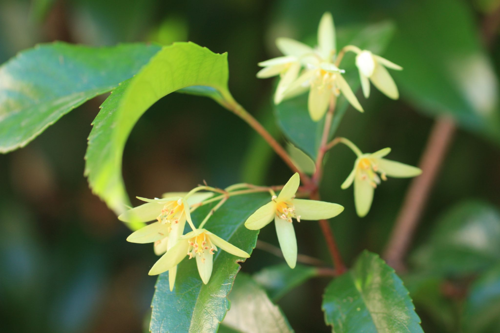

Aphanopetalaceae
Aphanopetalum Family
Aphanopetalaceae is a very small family of flowering plants endemic to Australia, belonging to the order Saxifragales. It contains only the genus Aphanopetalum with two species of scrambling shrubs or woody climbers. They are characterized by opposite leaves with toothed margins, small 4-merous flowers where the sepals are large and petal-like while true petals are minute or absent, and fruit being a one-seeded nutlet enclosed by persistent sepals.
Overview
The Aphanopetalaceae family consists of a single genus, Aphanopetalum, with just two species, both endemic to Australia. Aphanopetalum resinosum (Gum Vine) is found in rainforests and wet sclerophyll forests along the east coast (Queensland, New South Wales), while Aphanopetalum clematideum occurs in southwestern Western Australia, often scrambling over rocks near streams.
These plants are woody climbers or scrambling shrubs, using their often quadrangular stems to twine or lean on other vegetation. They have opposite, simple leaves with toothed or scalloped edges. The most distinctive feature is the flower structure: what appear to be four white or greenish petals are actually enlarged, persistent sepals. The true petals are either incredibly small and scale-like or completely absent, leading to the genus name Aphanopetalum (meaning "invisible petals").
The family has negligible economic importance but is of botanical interest due to its unique floral morphology and its phylogenetic position within the diverse Saxifragales order. They contribute to the plant diversity of their respective Australian habitats.
Quick Facts
- Scientific Name: Aphanopetalaceae
- Common Name: Aphanopetalum family (no widely used common name)
- Number of Genera: 1 (Aphanopetalum)
- Number of Species: 2
- Distribution: Endemic to Australia (East coast and Southwest)
- Evolutionary Group: Eudicots - Core Eudicots - Saxifragales
- Current Date: March 29, 2025
Key Characteristics
Growth Form and Habit
Scrambling shrubs or woody climbers (lianas), using stems to twine or lean. Stems often 4-angled or ridged.
Leaves
Leaves are opposite, simple, and petiolate. Leaf margins are serrated (toothed) or crenated (scalloped). Small blackish glandular dots are often present on the leaf surface. Small, interpetiolar stipules (fused between the petioles) are present but often fall off early (caducous).
Inflorescence
Flowers are borne in axillary or terminal cymes, which are often leafy (subtended by leaf-like bracts).
Flowers
Flowers are small, bisexual, actinomorphic (radially symmetrical), and 4-merous. The most conspicuous whorl is the calyx.
- Calyx: Consists of 4 distinct sepals that are large, petal-like (petaloid), typically white or greenish-white. They are persistent and enlarge somewhat in fruit.
- Corolla: Consists of 4 petals that are minute and scale-like, or, more commonly, absent.
- Androecium: 8 stamens arranged in two whorls of 4. Filaments are short. Anthers are small, basifixed, opening via longitudinal slits.
- Gynoecium: Ovary is usually reported as inferior or half-inferior (sometimes described as superior but fused to the calyx tube), composed of 4 fused carpels but forming a single locule (unilocular) due to incomplete septa. Placentation is parietal, appearing almost basal or apical, with typically 4 ovules (one per carpel). There are 4 distinct, short, recurved styles.
Fruits and Seeds
The fruit is a small, dry, indehiscent, one-seeded nutlet. It is enclosed by the persistent and somewhat enlarged petaloid sepals.
The single seed contains oily endosperm and a small embryo.
Chemical Characteristics
Plants contain ellagic acid. The presence of small glandular dots on the leaves suggests secretory capabilities, possibly resins (as hinted by the common name "Gum Vine" for A. resinosum).
Field Identification
Identifying Aphanopetalaceae (Aphanopetalum species) requires recognizing its scrambling/climbing habit, opposite toothed leaves, and particularly the unique flower structure, all within its Australian range:
Primary Identification Features
- Habit and Location: Scrambling shrub or woody climber, endemic to eastern or southwestern Australia.
- Opposite, Simple Leaves: Leaves paired, not compound, with serrated or crenated margins.
- Interpetiolar Stipules: Small stipules fused between the petiole bases (may be hard to see or fallen).
- 4 Large Petal-like Sepals: Flowers dominated by four white or greenish sepals that look like petals.
- Petals Minute or Absent: True petals are inconspicuous or missing entirely.
- 8 Stamens: Consistently 8 stamens in two whorls.
- Inferior/Half-Inferior Ovary: Ovary positioned below the apparent "petals" (sepals).
- Fruit a Nutlet Enclosed by Sepals: Small, dry, 1-seeded fruit surrounded by the persistent sepals.
Secondary Identification Features
- Glandular Dots on Leaves: Small dark dots may be visible on leaf surfaces.
- Quadrangular Stems: Stems often 4-angled.
- Flowers in Cymes: Inflorescence type.
Seasonal Identification Tips
- Year-round: The climbing/scrambling habit and opposite, simple, toothed leaves with interpetiolar stipules are key vegetative clues within Australia.
- Flowering Season: Mainly spring to summer. The flowers with 4 prominent white/greenish sepals and 8 stamens are highly diagnostic.
- Fruiting Season: Following flowering. Look for the small nutlet enclosed by the persistent, papery sepals.
Common Confusion Points
Within Australia, confusion might arise with other climbers or shrubs with opposite leaves:
- Pittosporaceae: Some Pittosporum or related genera can be climbers or shrubs with simple leaves (usually alternate but can appear opposite). Flowers are typically 5-merous with distinct petals, superior ovary, and fruit usually a capsule with sticky seeds.
- Apocynaceae (incl. Asclepiadoideae): Many are vines/climbers with opposite, simple, entire leaves, often with milky latex. Flowers are typically 5-merous, often with complex structures (corona, fused stamens/style - gynostegium), superior ovary (usually 2 distinct carpels), and fruit typically follicles with plumed seeds.
- Rubiaceae: Includes climbers/shrubs with opposite leaves and interpetiolar stipules. Distinguished by usually having a distinct corolla (fused petals), typically 4-5 stamens (equal to corolla lobes), and an inferior ovary, with varied fruit types (berries, drupes, capsules).
- Clematis (Ranunculaceae): Herbaceous or woody climbers with opposite, usually compound (not simple) leaves, no stipules, flowers with 4 or more petaloid sepals but numerous stamens and distinct carpels developing into achenes with persistent feathery styles.
The combination of opposite simple serrated leaves, interpetiolar stipules, 4 large petaloid sepals, minute/absent petals, 8 stamens, and 1-seeded nutlet fruit enclosed by sepals is unique to Aphanopetalaceae.
Field Guide Quick Reference
Look For:
- Scrambling shrub/climber (Australia)
- Opposite, simple leaves
- Serrated/crenated leaf margins
- Interpetiolar stipules (small/caducous)
- Flowers 4-merous
- 4 large petaloid sepals (white/greenish)
- Petals minute or absent
- 8 stamens
- Inferior/half-inferior ovary (4 carpels, 1 locule)
- Fruit: 1-seeded nutlet enclosed by sepals
Key Variations (between the 2 species):
- Distribution (E Aus vs W Aus)
- Slight differences in leaf shape/size
- Habit nuances (more robust vs slender climber)
Notable Examples
The family contains only one genus with two species:

Aphanopetalum resinosum
Gum Vine
A woody climber or scrambling shrub found in rainforests and wet sclerophyll forests of eastern Australia (Queensland and New South Wales). It has opposite, ovate to elliptic leaves with serrated margins, often with visible dark glands. Produces axillary cymes of small flowers dominated by the four white petaloid sepals.

Aphanopetalum clematideum
(Western Australian Aphanopetalum)
Endemic to southwestern Western Australia, typically found scrambling over rocks or vegetation near streams in forests or woodlands. Similar to A. resinosum with opposite, toothed leaves and 4-merous flowers with prominent white sepals and absent/minute petals, but geographically isolated.

Aphanopetalum (Flower Detail)
Flower Structure
A closer view showing the characteristic flower structure: four large, white, petal-like sepals forming the conspicuous whorl, surrounding the eight short stamens and the central inferior/half-inferior ovary with its four styles. True petals are absent in this view or would be minute scales at the base of the stamens.
Phylogeny and Classification
Aphanopetalaceae is placed within the large and diverse order Saxifragales, one of the major lineages of core eudicots. This order includes families with varied habits and morphologies, such as Crassulaceae (stonecrops), Saxifragaceae (saxifrages), Grossulariaceae (gooseberries), Paeoniaceae (peonies), Hamamelidaceae (witch hazels), and Altingiaceae (sweetgums).
The exact phylogenetic position of Aphanopetalaceae within Saxifragales has been somewhat uncertain historically due to its distinctive morphology. Molecular studies generally place it within the core Saxifragales clade, possibly near other small, somewhat isolated families like Tetracarpaeaceae (monotypic, Tasmania) and Penthoraceae (2 species, E Asia/E North America), or potentially closer to the Haloragaceae (water milfoil family) lineage. It is clearly distinct from the Hamamelidaceae/Altingiaceae clade where some early classifications might have tentatively placed climbing forms.
Position in Plant Phylogeny
- Kingdom: Plantae
- Clade: Angiosperms (Flowering plants)
- Clade: Eudicots
- Clade: Core Eudicots
- Order: Saxifragales
- Family: Aphanopetalaceae
Evolutionary Significance
Aphanopetalaceae, though small, contributes to understanding Saxifragales evolution:
- Unique Floral Morphology: The extreme reduction or loss of petals coupled with the expansion of sepals into a petaloid function represents an interesting evolutionary pathway in floral display within the order.
- Phylogenetic Position: Helps refine the relationships among the diverse families of Saxifragales, particularly linking some of the smaller, geographically restricted lineages.
- Biogeography: Its endemism to Australia adds to the picture of how the diverse Saxifragales order achieved its global distribution, with several lineages having ancient Gondwanan connections or restricted ranges.
- Morphological Convergence/Divergence: Comparing its features (like opposite leaves with interpetiolar stipules, inferior ovary) with other families highlights instances of both convergent evolution and divergence from ancestral traits within the Saxifragales.